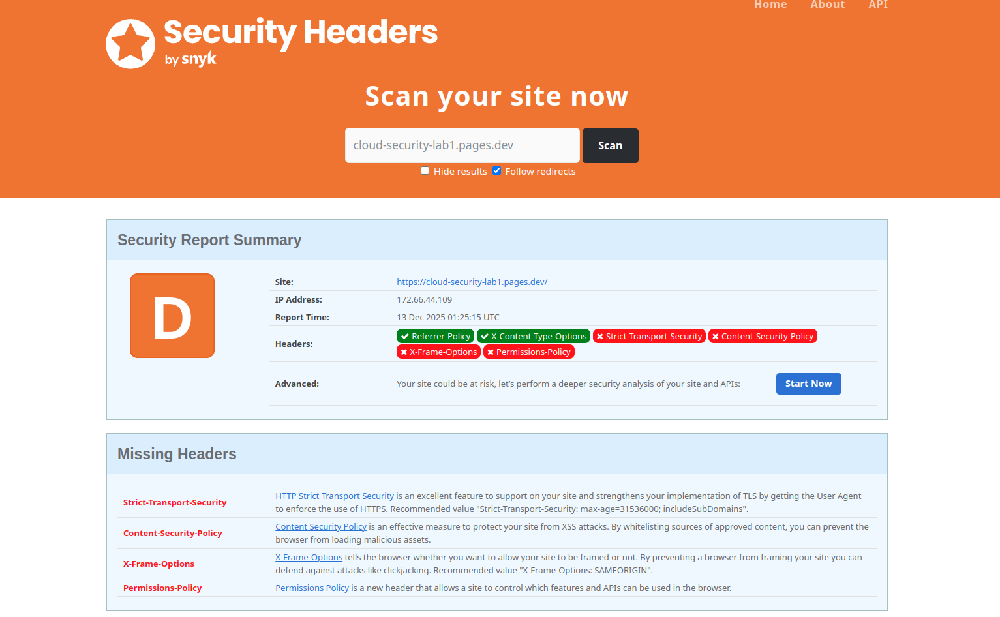
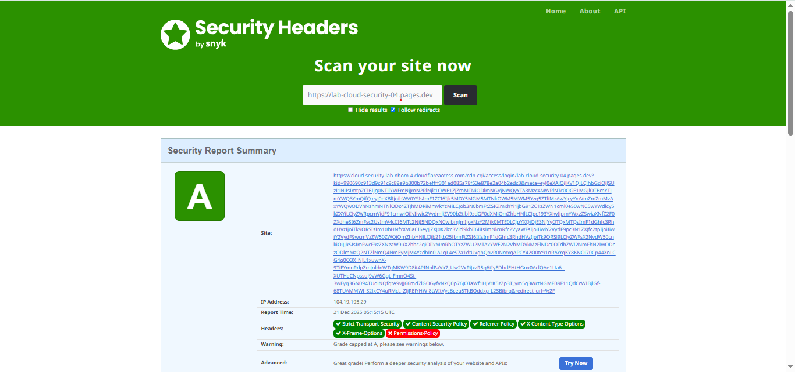
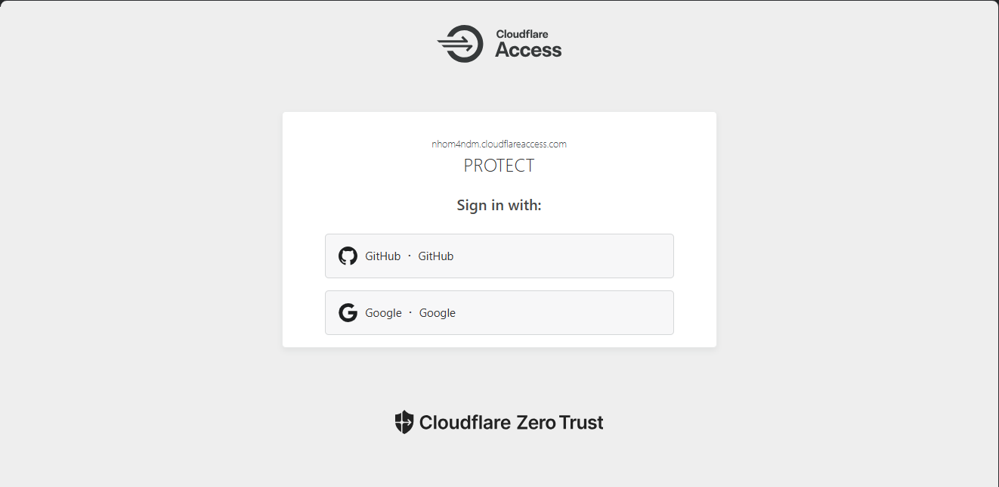
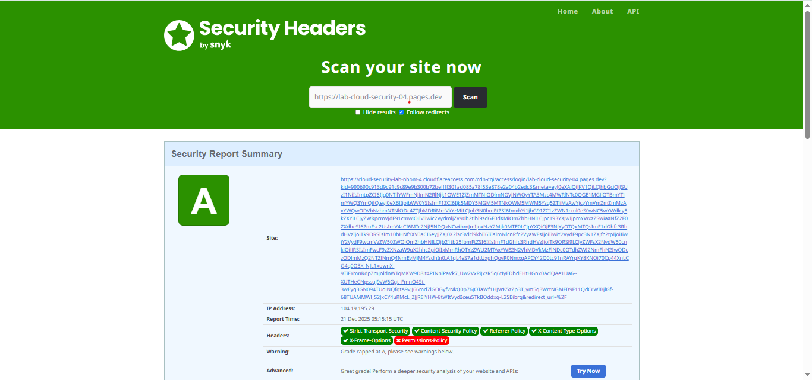
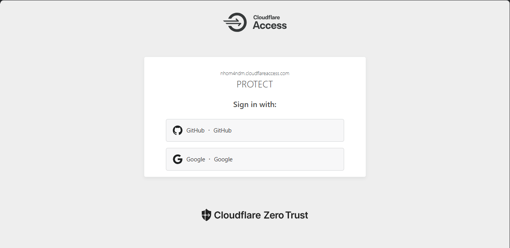

Thông tin thành viên nhóm
22004262 – Nguyễn Phúc Hạnh Nguyên
22004263 – Trần Ngọc Mỹ Duyên
22004285 – Võ Đinh Hoàng Mỹ
22004262 – Nguyễn Phúc Hạnh Nguyên
22004263 – Trần Ngọc Mỹ Duyên
22004285 – Võ Đinh Hoàng Mỹ
1. Cloud Computing là gì?
Cloud Computing (Điện toán đám mây) là mô hình cung cấp tài nguyên CNTT như máy chủ, lưu trữ, cơ sở dữ liệu, mạng và phần mềm thông qua Internet theo hình thức dịch vụ. Người dùng không cần đầu tư hạ tầng vật lý mà chỉ sử dụng và trả phí theo mức độ dùng.
Đặc điểm chính:
2. Phân biệt IaaS – PaaS – SaaS
| Mô hình | Người dùng quản lý | Nhà cung cấp quản lý | Ví dụ |
|---|---|---|---|
| IaaS (Infrastructure as a Service) |
HĐH, ứng dụng, dữ liệu | Server, storage, network | AWS EC2 |
| PaaS (Platform as a Service) |
Ứng dụng, dữ liệu | Hạ tầng + nền tảng | Cloudflare Pages |
| SaaS (Software as a Service) |
Chỉ sử dụng | Toàn bộ hệ thống | Gmail |
3. Website tĩnh thuộc mô hình cloud nào?
Website tĩnh thuộc mô hình PaaS vì người dùng chỉ cần viết HTML/CSS/JS, không cần quản lý server hay hệ điều hành. Cloudflare Pages đảm nhiệm deploy, HTTPS và CDN.
4. Cloudflare Pages hoạt động theo cơ chế gì?
5. CDN phân phối nội dung ra sao?
CDN là mạng lưới máy chủ phân bố toàn cầu. Khi người dùng truy cập website, CDN sẽ chọn máy chủ gần nhất để trả nội dung, giúp tăng tốc tải trang và giảm độ trễ.
6. Vai trò của CDN đối với hiệu năng và an toàn
7. Ví dụ minh họa

Ví dụ:
8. Rủi ro bảo mật còn tồn tại
9. Giải pháp
1. GitHub là gì?
GitHub là nền tảng lưu trữ mã nguồn dựa trên Git, cho phép: quản lý source code; làm việc nhóm; lưu trữ website tĩnh (HTML, CSS, JS); kết nối với các dịch vụ triển khai tự động (CI/CD).
2. Cloudflare Pages là gì?
Cloudflare Pages là dịch vụ: triển khai (deploy) website tĩnh; tích hợp trực tiếp với GitHub; có CDN toàn cầu; miễn phí, tốc độ cao, HTTPS tự động.

1. Kiểm tra an toàn website bằng SecurityHeaders
Kiểm tra Security Headers 2. Đánh giá hiệu năng bằng PageSpeed Insights
Kiểm tra Security Headers
Authentication (Xác thực)
Là quá trình xác minh danh tính người dùng (username/password, MFA, sinh trắc học…).
Authorization (Phân quyền)
Là quá trình xác định quyền truy cập sau khi xác thực thành công.
IAM là tập hợp các chính sách và công cụ dùng để quản lý danh tính và quyền truy cập của người dùng vào tài nguyên hệ thống cloud.
Zero Trust hoạt động theo nguyên tắc “Never Trust – Always Verify”.
Website public hoàn toàn
Website có IAM
Website có IAM nhưng không Zero Trust
| Tiêu chí | Mô hình bảo mật mạng truyền thống | Mô hình Zero Trust trong môi trường Cloud |
|---|---|---|
| Nguyên tắc | Tin cậy nội bộ | Không tin cậy ai |
| Xác thực | Một lần | Liên tục |
| Phân quyền | Rộng | Tối thiểu |
 



1. Monitoring là gì?
Khái niệm: Monitoring (giám sát) là việc theo dõi liên tục tình trạng và hiệu suất của hệ thống trong thời gian thực.
Nội dung:
Mục đích:
Đánh giá:
2. Logging là gì?
Khái niệm: Logging là việc ghi lại toàn bộ sự kiện và hoạt động diễn ra trong hệ thống.
Nội dung:
Mục đích:
Đánh giá:
3. Security Visibility trong Cloud
Khái niệm: Security Visibility là khả năng nhìn thấy và kiểm soát toàn bộ hoạt động bảo mật trong môi trường cloud.
Nội dung:
Mục đích:
Đánh giá:
4. Vai trò Monitoring & Logging trong Cloud
5. So sánh Monitoring và Logging
| Tiêu chí | Monitoring | Logging |
|---|---|---|
| Thời điểm | Thời gian thực | Sau khi xảy ra |
| Dữ liệu | Chỉ số (metrics) | Sự kiện chi tiết |
| Mục tiêu | Phát hiện sớm | Phân tích nguyên nhân |
Vì sao cần giám sát?
Rủi ro nếu không giám sát
Vì sao cần giám sát?
Rủi ro nếu không giám sát
Vì sao cần giám sát?
Rủi ro nếu không giám sát
Vì sao cần giám sát?
Rủi ro nếu không giám sát
Vì sao cần giám sát?
Rủi ro nếu không giám sát
Phù hợp: Monitoring
Ví dụ:
Nếu số lần login fail > 100 lần/phút → hệ thống phát cảnh báo tấn công brute-force.
Phù hợp: Logging
Ví dụ:
Phân tích log cho thấy user A đăng nhập lúc 02:13 từ địa chỉ IP xác định.
Phù hợp: Logging (kết hợp Monitoring)
Ví dụ:
Monitoring cảnh báo server error, trong khi logging cho biết nguyên nhân là lỗi database timeout.
Trong tình huống giả định trong vòng 10 phút, hệ thống ghi nhận các dấu hiệu bất thường sau:
Monitoring tập trung theo dõi các chỉ số tổng thể theo thời gian thực (metrics).
Log ghi lại chi tiết từng sự kiện riêng lẻ xảy ra trong hệ thống.
Nếu hệ thống chỉ có monitoring mà không có log, sẽ gặp các hạn chế sau:
Kết luận: Monitoring giúp phát hiện “có bất thường”, còn Logging giúp trả lời “bất thường đó là gì và do ai gây ra”. Hai thành phần này phải được kết hợp thì hệ thống an ninh mới hiệu quả.
Log là nguồn dữ liệu bằng chứng số (digital evidence), ghi lại toàn bộ hoạt động xảy ra trong hệ thống. Khi sự cố an toàn thông tin xảy ra, log giúp tái dựng lại chuỗi sự kiện và xác định nguyên nhân gốc rễ (root cause).
Kết luận: Không có log → không thể trả lời đầy đủ các câu hỏi trên.
Khó khăn trong xác định nguyên nhân:
Khó khăn trong xác định trách nhiệm:
Kết luận: Không có log, việc điều tra sự cố chỉ dựa trên suy đoán.
(1) Rủi ro khi log ghi quá chi tiết
(2) Rủi ro khi log không được bảo vệ đúng cách
Kết luận: Log phải được bảo vệ như dữ liệu mật.
Cloud cho phép tập trung log theo mô hình centralized logging.
Phát hiện sớm:
Phát hiện muộn:
Kết luận: Monitoring và Logging phải kết hợp thì hệ thống cloud mới an toàn và hiệu quả.